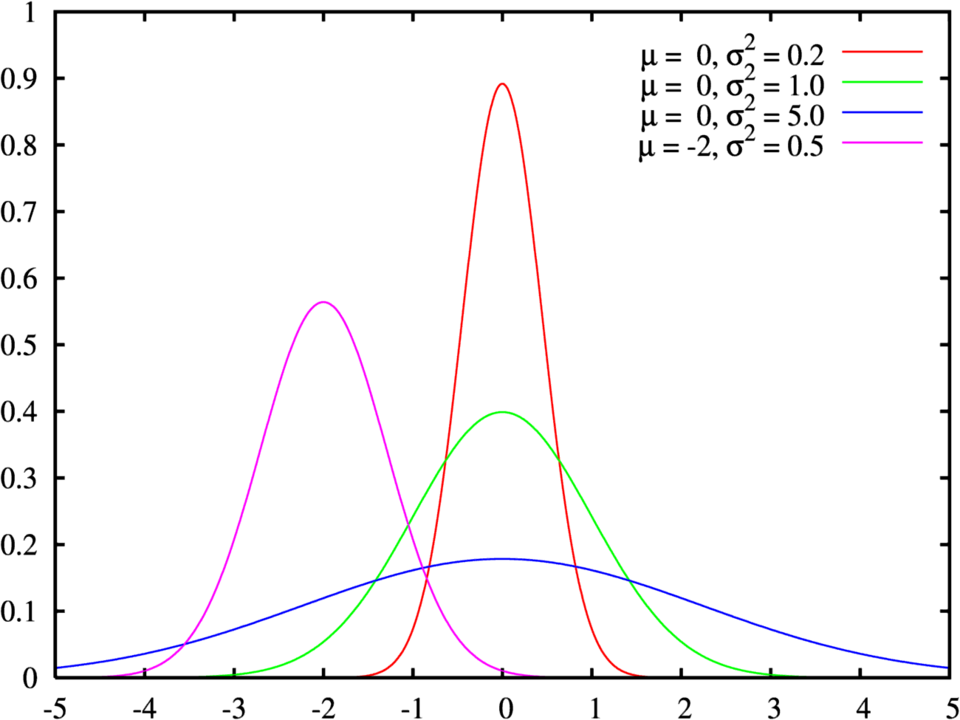
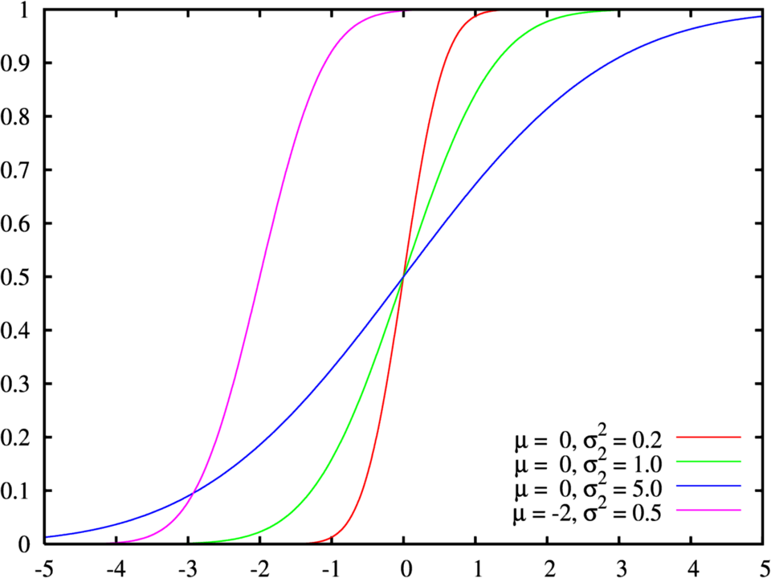

Algunas distribuciones de Probabilidad
Continuas
Distribución Normal
En estadística y probabilidad se llama distribución normal, distribución de Gauss, distribución gaussiana a una gráfica de función de densidad con forma acampanada y simétrica respecto de un determinado parámetro estadístico. Esta curva se conoce como campana de Gauss y es el gráfico de una función gaussiana. Su forma general es:
\[f(x)={\frac {1}{\sqrt {2\pi \sigma ^{2}}}}e^{-{\frac {(x-\mu )^{2}}{2\sigma ^{2}}}}\]
Algunas graficas de la distribución son:
Función de densidad de probabilidad


Función de distribución de probabilidad

